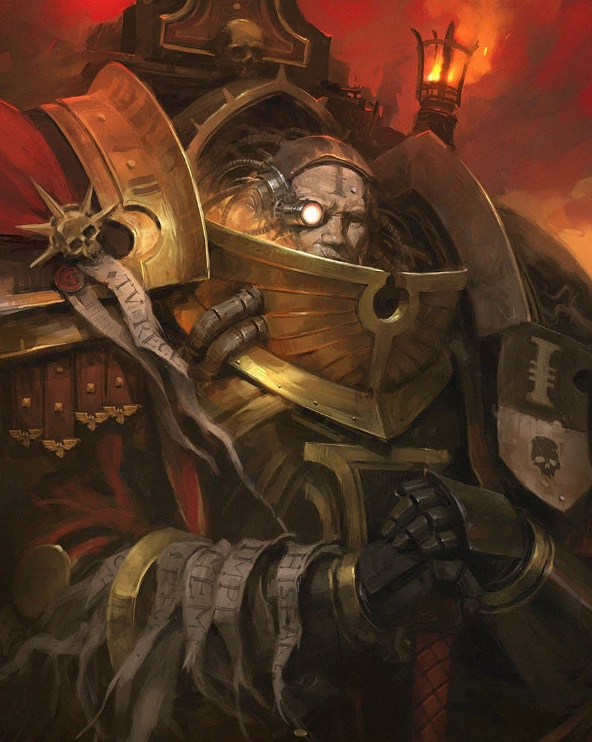

Dossier Inquisitorial 702.M41
L’Ordo Malleus ne chasse pas les traîtres ordinaires. Il ne poursuit pas les criminels, les rebelles ou les faibles. Il affronte ce qui ne devrait pas exister dans le réel.
Son ennemi est le démon. La corruption du Warp incarnée. Une violation de la matière, une plaie ouverte dans l’ordre naturel, une horreur que la plupart des hommes ne peuvent regarder sans perdre une part d’eux-mêmes.

MANDAT SACRÉ
Là où le voile entre le monde matériel et l’Immaterium se déchire, l’Ordo Malleus intervient. Cultes démoniaques, possessions, invocations, artefacts maudits, brèches warp. Tout ce qui touche aux puissances immatérielles relève de sa juridiction.
Ses Inquisiteurs sont parmi les plus redoutés de tout l’Imperium. Non parce qu’ils manquent de foi, mais parce qu’ils savent précisément ce que la foi seule ne suffit pas toujours à contenir.
Une enquête de l’Ordo Malleus laisse rarement des survivants nombreux. Les témoins sont interrogés. Les lieux sont purifiés. Les documents sont scellés. Les faibles sont exécutés.
Car la connaissance du démon est déjà une contamination. Un nom entendu trop clairement. Une forme observée trop longtemps. Une promesse comprise dans un cauchemar. Il en faut parfois moins pour ouvrir une faille dans une âme.
MÉTHODES ET PURGES
L’Ordo Malleus entretient un lien étroit avec les Grey Knights, ces guerriers secrets forgés pour combattre les entités du Warp. Lorsque ces derniers sont déployés, la situation a déjà franchi les limites du supportable.
Les méthodes de l’Ordo Malleus sont extrêmes. Elles doivent l’être. Face au démon, la pitié devient faiblesse, la curiosité devient invitation, et l’hésitation devient complicité.
Les mondes touchés par une incursion majeure ne sont pas toujours sauvés. Certains sont purgés. Certains sont scellés. Certains sont effacés des cartes impériales, car leur survie présenterait un risque plus grand que leur destruction.
L’Ordo Malleus ne cherche pas la gloire. Ses victoires ne sont pas chantées. Ses morts ne sont pas toujours reconnues. Ses décisions ne sont pas expliquées.
HÉRITAGE DE TERREUR
Il agit dans l’ombre parce que la vérité qu’il combat ne peut être offerte aux masses. L’Imperium tient parce que la plupart de ses sujets ignorent à quel point la nuit est proche.
Il faut comprendre ceci. L’Ordo Malleus n’est pas le marteau de l’Inquisition par symbolisme. Il est le marteau parce que certaines horreurs ne peuvent être raisonnées, converties ou emprisonnées. Elles doivent être brisées.
Fin de l’extrait. Toute manifestation démoniaque suspectée doit être signalée immédiatement. Le silence équivaut à une trahison.